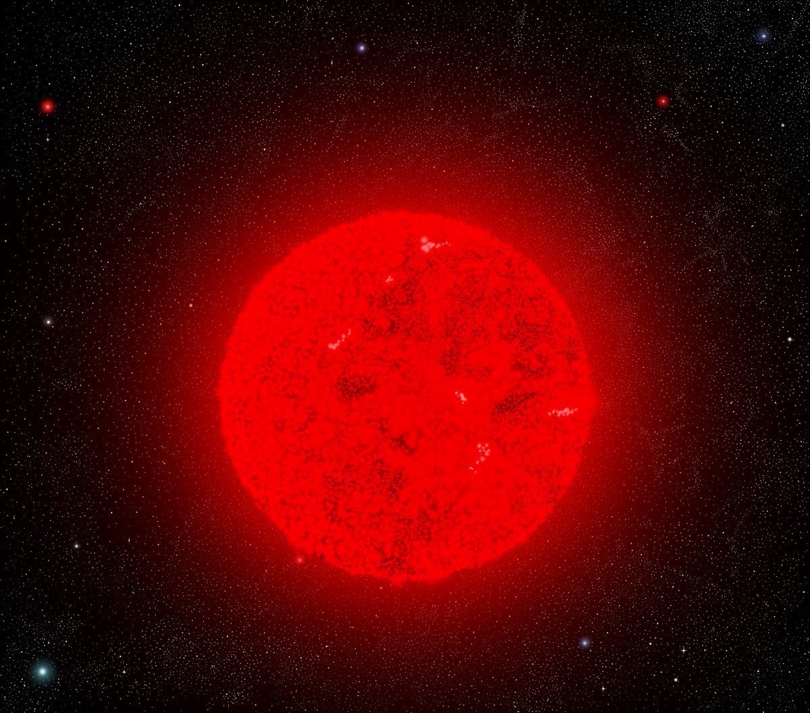
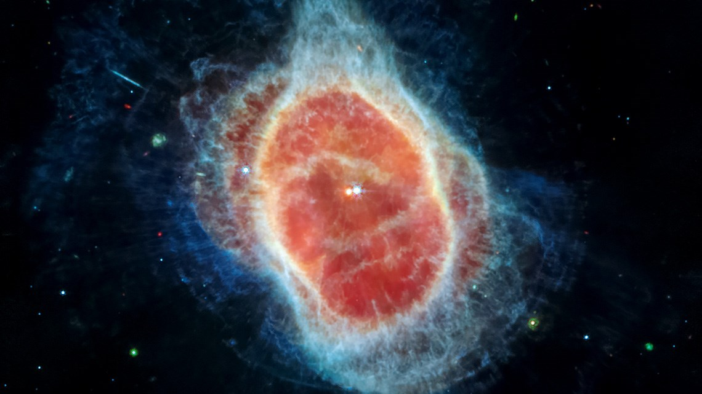

Llamadas estrellas de secuencia principal, son estrellas de masa y tamaño medios, similares al Sol en términos de temperatura y luminosidad, que pueden variar según su clasificación. Es uno de los tipos de estrellas con más variaciones en su clasificación, pues se miden en función de su temperatura superficial, su luminosidad y color. Las estrellas son comunmente clasificadas en 7 tipos, siendo estos O, B, A, F, G, K y M, desde las más frías y pequeñas (tipo M) hasta las más calientes y masivas (tipo O). Este tipo de estrella, abarca desde las tipo F hasta las tipo K, siendo el Sol una estrella tipo G. Estas estrellas son fundamentales para la comprensión de la evolución estelar, ya que representan la etapa más estable y duradera en la vida de una estrella. Su estudio proporciona información valiosa sobre la formación y evolución de las estrellas, así como sobre la composición química del universo.
Durante su secuencia principal, que es la más duradera, las estrellas tipo Sol queman hidrógeno en sus núcleos a través de la fusión nuclear, lo que genera una enorme cantidad de energía y luz. Las estrellas de este tipo contienen elementos como hidrógeno, helio, carbono, nitrógeno y oxígeno, así como cierto tipo de metales, que la ayudan a mantenerse estables y brillar con intensidad. Esta etapa puede durar varios miles de millones de años, dependiendo de la masa de la estrella. Durante este tiempo, la estrella mantiene un equilibrio entre la presión hacia afuera generada por la fusión nuclear y la gravedad que tiende a colapsarla hacia adentro. Con el paso de los milenios, o eones, la estrella va consumiendo su combustible de hidrógeno, lo que eventualmente lleva a cambios en su estructura y comportamiento. El hidrógeno en su núcleo comienza a agotarse aproximadamente 10 000 millones de años después de su nacimiento, lo que provoca que la fusión se detenga y la presión hacia afuera disminuya.
Cuando una estrella tipo Sol agota su combustible de hidrógeno, su núcleo se contrae y se calienta, lo que provoca que las capas externas se expandan y enfríen, convirtiéndose en una gigante roja. Durante esta fase, la estrella puede aumentar su tamaño significativamente, incluso engullendo a los planetas cercanos. Se estima que cuando el sol alcance su etapa de gigante roja, engullirá a Mercurio, Venus y posiblemente a la Tierra. Sin embargo, esta fase es relativamente corta en comparación con la secuencia principal, durando solo unos pocos cientos de millones de años. En un momento dado, la atmósfera de la estrella alcanza un valor mínimo crítico de la temperatura por debajo del cual ya no puede descender, lo que obliga a la estrella a aumentar su luminosidad y volumen a temperatura superficial (o sea, color) prácticamente constantes; la estrella se hincha hasta alcanzar un radio típico de unos 100 millones de km: la estrella se ha convertido así en un gigante rojo. Cuanto menos, curioso, que el momento en que la estrella alcanza su máximo tamaño, es también el momento en que su temperatura es mínima, y se encuentra cerca de su final. A nuestro sol aún le quedan unos 5 000 millones de años antes de que alcance esta fase, por lo que probablemente no estaremos aquí para verlo.
Al final de su vida, las estrellas tipo Sol experimentan una serie de cambios dramáticos. Cuando el hidrógeno en su núcleo se agota, la fusión nuclear se detiene y la estrella comienza a colapsar bajo su propia gravedad. Este colapso provoca un aumento de la temperatura y la presión en el núcleo, lo que lleva a la fusión del helio en elementos más pesados. Durante esta fase, la estrella expulsa sus capas externas de manera gradual, pero violenta al espacio, creando una hermosa nebulosa planetaria, conformada por los restos de una estrella en sus últimos momentos de vida. El núcleo restante, similar al caso de las enanas rojas, se convierte en una enana blanca, un objeto extremadamente denso y caliente que eventualmente se enfriará y se desvanecerá con el tiempo.